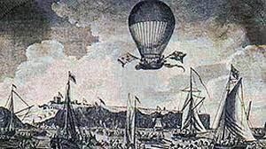
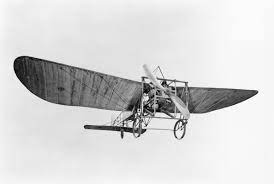

Note: A ce moment, la terre est survolée, il reste aux aviateurs à franchir les mers.
Le 5 octobre 1908, le journal britannique « Daily Mail » crée un prix de 1 000 livres sterling, pour récompenser l’aviateur qui réussira à traverser la Manche au moyen d’un plus lourd que l’air. (Les plus légers que l’air l’ont en effet déjà traversée: 7 janvier 1785, Jean-Pierre Blanchard et John Jeffries Douvres-forêt de Guines (Calais) ballon à gaz)

Un aviateur, Serge de Bolotoff, est le premier postulant, dès novembre 1908. Il songe à utiliser un aéroplane triplan construit spécialement par les frères Voisin, équipé d’un moteur Panhard et Levassor de 110 CV puis, devant la difficulté, il renonce bientôt à son projet.
Vont rester en compétition trois concurrents :
Hubert Latham est le premier à s'élancer. Mais son avion tombe à la mer, à 18 km des côtes françaises. Heureusement le fuselage de son avion est en forme de coque de bateau ce qui lui permet de flotter.
Mais Latham a reçu un autre appareil, l’« Antoinette VII ».
Entre lui et Blériot, c’est à qui partira le premier. Ce sera Blériot ! Après un vol d’essai de 10 minutes il s'envole le 25 juillet à 4 h 35 (l’aviateur ne sait pas nager). En cas de chute, un cylindre gonflé d’air doit assurer la flottaison de l’appareil et un gilet de sauvetage permettre au pilote de surnager. Ayant dérivé vers le nord-est, et ne pouvant pas franchir les falaises, il vire vers la gauche en longeant la côte pour trouver un endroit propice à l’atterrissage, si possible Shakespeare Hills. Blériot découvre enfin la prairie de North Foreland Meadow, que lui signale comme convenu, en agitant un drapeau tricolore, le journaliste du quotidien « Le Matin », Charles Fontaine. L’atterrissage est brutal ; le châssis de l’avion s’affaisse et une pale de l’hélice Chauvière se détache. Mais la Manche, soit 38 km, est franchie en 32 minutes. La terre a été touchée à 5 h 17.

Quant-à Charles de Lambert s’est installé, lui, à Wissant, à côté de Boulogne-sur-Mer. Il a pour appareil un biplan « Wright » construit par Toxna, muni d’un moteur Bariquand et Marre de 24 CV. Sa tentative lui paraît-elle superflue après la réussite de Blériot ? Le 27 juillet, à 8 h 30, il décide d’effectuer un essai avant de prendre une décision. Un mauvais atterrissage met son appareil momentanément hors d’usage. Les circonstances ont décidé pour lui. Il abandonne, pour connaître par la suite d’autres succès.
source: francearchive